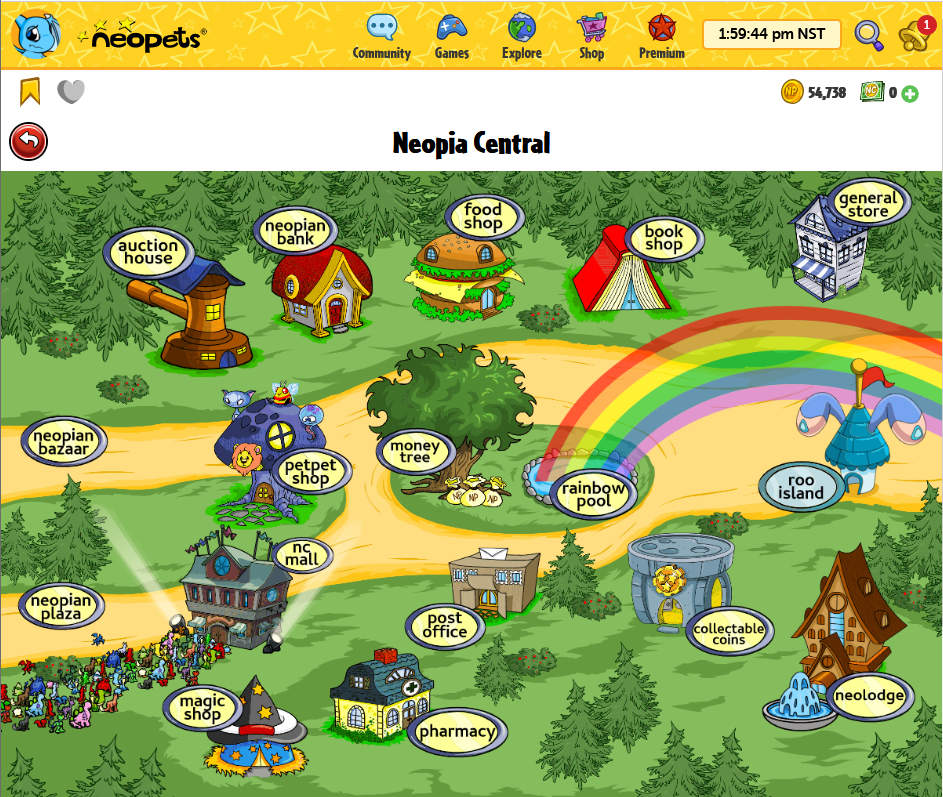

Reverse Engineering NeoQuest II
Introduction
In short: NeoQuest II is a game that ten-year-old me liked to play on Neopets.com, an old website that may not be long for this world. Since its game logic is processed server-side, the only way to understand and preserve NeoQuest II is to reverse engineer its mechanics. With some aspects of the game being randomized, I will need to gather large amounts of data using automated scripts, and then analyze it to extract the game logic.
The Game
Neopets.com is an interactive website and media franchise created by Adam Powell and Donna Williams in 1999. Your main task as a user is to care for a set of Neopets, which are virtual creatures that you adopt after creating an account1. The designers of Neopets worked hard to create a coherent fictional world for the game, which unfolds across various web pages on the site. These pages range from maps to storefronts to interactive mini-games, all designed to entertain the player and increase their immersion.

My experience with Neopets dates back to 2005, when I created my first account along with my sister2. One of my favorite games on the site was NeoQuest II, a simple RPG that had you battle monsters and level up your characters across five lands lifted from the Neopets world. Given how undemanding their young audience was, I would say that the creative team put a surprising amount of heart and charm into the game, although it certainly won’t (and didn’t) win any awards. Ten-year-old me loved it, in any case.
The Problem
To make a long story short, Neopets.com has seen better days. The website’s architecture was mediocre even in its prime, and from what I’ve heard the PHP code base has not been updated in decades. This has led to numerous bugs, crashes, and shenanigans3. The death of Flash in 2021 was also a massive blow to the site, as most of its mini-games and infrastructure had been originally built on Flash and never migrated. While none of these issues are necessarily fatal, their combined weight is dragging Neopets into a death spiral that it seems unlikely to recover from.
So what does this mean for our beloved NeoQuest II? Unlike the many flash-based games on Neopets, NeoQuest II is exclusively server-side, with the browser simply sending POST requests to update the game’s remote state and retrieve a new HTML page. Want to move? Gotta reload the page. Aside from making the game a bit awkward to play, this has the added effect of tying NeoQuest’s very existence to the continued operation of the Neopets servers. Should they go down, which seems a very real possibility, there will be no way to recreate the game unless an employee happens to preserve and release its source code4.
The Solution
Although NeoQuest’s code is hidden, it is certainly not isolated. Every time the player makes a move, attacks an enemy, levels up a skill, etc., some information about the underlying game logic is revealed. By performing a large number of different actions and recording their effects, it should be possible to reverse engineer the mechanics of the game. For cases in which the game’s behavior is deterministic, only a single observation needs to be made to understand the relevant mechanic. This is the kind of information that can be easily found in existing NeoQuest II game guides5, such as enemy names, map layouts, and item types.
Randomized game mechanics pose a far greater challenge. Even when performed under identical conditions, multiple observations of a random or stochastic mechanic can yield very different outcomes. The goal in these cases is not to replicate any given output but to instead characterize the structure of the probability distribution being sampled. This will in general require a very large number of observations (hundreds or even thousands), far exceeding what is usually seen in normal playthroughs.
With all of this in mind, it seems obvious that I can’t gather the data necessary to reverse engineer NeoQuest II by just sitting down and playing the game. Not only would it be incredibly tedious to record all of the relevant information after every action, but the sheer quantity of data needed to pin down the stochastic mechanics would require an inhuman amount of playtime (even for ten-year-old me). Instead, my approach will be to create a program that can play NeoQuest II in an automated and consistent fashion, and pair it with an HTML parsing algorithm that can extract all of the necessary information from each page refresh. Once the data is collected, it is simply6 a matter of analyzing the data and extracting the underlying game mechanics.
Automating NeoQuest II
In short: To gather large quantities of game data, I designed a program that can play NeoQuest II autonomously using Selenium. This auto-player employs customizable logic to move, fight, manage inventory items, and distribute skill points. At each step of the game, the auto-player logs all relevant information in a database for future analysis.
Game Overview
NeoQuest II is a simple turn-based role-playing game (RPG), in which the player leads a plucky band of heroes on a quest to save the world7. The main protagonist of the series is Rohane, a standard knight-type character who specializes in hitting things hard with his sword. He is the sole member of the player’s party at the beginning of the game, but over time three more characters can be recruited: Mipsy the wizard, Talinia the archer, and Velm the cleric. Each of them brings a unique set of abilities to the party, which will be needed to defeat the wide variety of monsters that await the player.
To progress through NeoQuest II, the player must lead their party across a set of two-dimensional maps. Each map is broken up into a large number of square tiles, which the player can move between using eight directional arrows spanning the cardinal8 and inter-cardinal9 directions. These tiles contain different basic scenery items, with the most important distinction being between tiles that are passable, such as forests, and those that are impassable, such as mountains. The maps themselves can depict localized areas such as towns, castles, and caves, or much larger overworlds that hold entrances to the smaller locations.
Each time the player makes a move, there is a chance (in most areas outside of towns) for the party to be ambushed by between one and four enemies. During combat, the player can choose to attack, use a potion, wait, or attempt to flee. If the player opts to attack, they can use either a default melee attack or a special ability unique to the character. Every action takes a certain amount of time to complete, which determines when a character gets to make their next move. In between player moves, the enemies will complete their own actions by either performing a melee attack on a party member or using a special ability. Fully depleting a combatant’s hitpoints will render them inactive for the remainder of the fight, which continues turn-by-turn until all party members or all enemies are incapacitated.
When the player is victorious in combat, each party member will be awarded a certain number of experience points based on their current level and the strength of the defeated enemies. After earning enough experience, a character will level up and gain a skill point, which can be spent on one of seven different skills for each character (up to a maximum of fifteen points per skill). Examples of different skills are healing spells for Velm, stunning attacks for Rohane and Talinia, and damage spells for Mipsy. In addition to leveling up, the performance of a character can also be improved using weapons or armor looted off of defeated enemies or purchased at shops.
Foundations for Automation
To gather the large quantity of data necessary for this project, I need some method of playing NeoQuest II in an automated fashion (an auto-player). In practice, this will mean some type of computer program that can:
- Perform in-game actions by sending the appropriate request to Neopets.com.
- Parse the returned HTML document to extract relevant information.
- Understand the game logic well enough to play NeoQuest II in a somewhat intelligent fashion.
Fortunately, the simplicity of NeoQuest II makes it relatively straightforward to build an auto-player that satisfies all three of these requirements.
To start, I need a way to interact with the Neopets website in a manner that won’t trigger any bot-detection algorithms10. The best tool for this job is Selenium, a web scraping browser testing library that can launch automated instances of popular web browsers like Chrome or Firefox. The Selenium web drivers come with a wide array of different settings and options, but I found the simple configuration below to be sufficient (I used Selenium’s Python bindings for this project):
options = Options()
options.page_load_strategy = "none"
driver = webdriver.Firefox(options = options)
driver.install_addon("ublock_origin-1.50.0.xpi")The most notable choice I made here was to install uBlock Origin as an ad blocker. While not strictly necessary, it prevented Neopets’ many banner and sidebar ads from consuming the browser’s memory and dragging down its performance11. Additionally, I set the page_load_strategy option to none so that the Selenium code will not block the rest of the program as it tries to load a page.
Once the Selenium driver is initialized, it gets wrapped in a larger class which handles various commands and queries sent by the auto-player. The core of the class is the _do_action method, which takes a requested web action and executes it:
def _do_action(self, func, args, safe_url):
while True:
try:
game_div = self.driver.find_element(
By.CSS_SELECTOR, ".contentModule.phpGamesNonPortalView"
)
func(*args)
WebDriverWait(self.driver, 20).until(staleness_of(game_div))
WebDriverWait(self.driver, 20).until(
lambda d: d.find_element(By.CSS_SELECTOR, ".contentModule.phpGamesNonPortalView")
)
break
except TimeoutException:
print("Action failed.")
while True:
try:
self._hard_refresh(safe_url)
break
except TimeoutException:
pass
self.soup = self._get_page_soup()
self.source = get_source(self.soup)
time.sleep(0.3)
def _hard_refresh(self, return_url):
self.driver.get("https://www.google.com/")
WebDriverWait(self.driver, 20).until(
lambda d: d.find_elements(By.CSS_SELECTOR, "img.lnXdpd")
)
self.driver.get(return_url)
WebDriverWait(self.driver, 20).until(
lambda d: d.find_element(By.CSS_SELECTOR, ".contentModule.phpGamesNonPortalView")
)Only the func(*args) portion of the code is truly needed to perform the requested action, while everything else is there to ensure that Selenium actually executes it. Since calls to the web driver are inherently asynchronous, the code needs to verify that the page has reloaded by monitoring elements in the DOM tree12. If the page fails to reload, as can often happen, the _hard_refresh method is called to navigate off of Neopets.com and then return to the NeoQuest II page.
Playing the Game
Using the base _do_action driver method, it is fairly easy to perform all of the actions required to play NeoQuest II. To navigate through the world, the player normally clicks on a set of arrows, which are represented internally as an image map. Different areas of the map are assigned event handlers for the eight movement directions, so the auto-player can move by simply executing the appropriate JavaScript:
def move(self, direction):
direction_id = explore_parser.get_direction_id(direction)
if not self.is_fighting():
while self.source != "explore":
self._return_to_map()
self._do_action(
self.driver.execute_script,
[f"dosub({direction_id});"],
"https://www.neopets.com/games/nq2/nq2.phtml"
)The structure of this movement code is similar to that of most other actions, and consists of three main steps:
- Extract and interpret information from the structure of the HTML page source.
- Navigate to the game page which matches the requested action.
- Perform the action by executing the appropriate script or navigating to the correct page.
When the auto-player makes a move, the specified direction needs to first be converted into the correct script ID (step 1), then the browser must navigate to the map page (step 2), and finally a JavaScript function must be called to send the action to the server (step 3). The most common error in this process is that the server will not send back an updated page after the request is made, but this can be easily remedied by simply reloading the game page13.
By stringing together different actions, I can assemble a game loop that will play NeoQuest II at a basic level14:
def game_step(driver, game_state, handler, conn):
fought = False
moved = make_move(driver, handler, game_state)
if not moved:
game_state.live = False
return game_state
game_state.move_id += 1
if driver.is_fighting():
fight_loop(driver, handler, game_state.game_id, game_state.move_id, conn)
fought = True
state_update(driver, game_state, ["explore", "characters"])
process_inventory(driver, handler, game_state, update = fought)
process_skills(driver, handler, game_state, update = fought)
return game_state
def fight_loop(driver, handler, game_id, move_id, conn):
turn_id = 0
driver.begin_fight()
fight_dict = driver.get_fight_dict()
fight_state = fight.FightState(fight_dict)
while not fight_state.ended:
if fight_state.is_player_turn():
make_fight_move(driver, handler, fight_state)
else:
driver.take_enemy_turn()
fight_dict = driver.get_fight_dict()
fight_state = fight.FightState(fight_dict)
turn_id += 1
driver.end_fight()
driver.return_from_fight()The game_step function processes movement from one map tile to another, and is broken up into three stages. First, a direction is specified by the handler, which contains preset rules dictating player movement (more on this shortly). Next, the auto-player detects whether any enemies have attacked, in which case control is passed to the fight_loop function, which completes the battle. Following this, the auto-player queries its associated web driver to get the new location and party status. Finally, if this new information indicates that one or more of the party members has leveled up or needs to be healed, then the auto-player will open the inventory and/or skill pages to perform any necessary actions.
The most critical piece of the auto-player is the aforementioned handler, which serves as the “brains” of the operation. This object is a thin wrapper around a set of four “sub-handlers”, which control actions related to movement, combat, inventory items, and skills respectively. As an example, here is the code for a combat handler that will either attack an enemy or try to flee:
class SimpleMelee():
def __init__(self, flee_rate = 0):
self.target_picked = False
self.flee_rate = flee_rate
def perform(self, fight_state):
if not self.target_picked:
self.target_picked = True
target = fight_state.get_alive_enemies()[0]
action = f"trg_{target}"
else:
self.target_picked = False
sample = random.uniform(0, 1)
if (self.flee_rate > 0) and (sample <= self.flee_rate):
action = "flee"
else:
action = "attk"
return actionWhen the auto-player wants to make its next move, it calls the perform method and gets back an action string which the web driver can then execute. When prompted, the handler shown above will first target an enemy if it hasn’t done so already, then it will either perform a melee attack or attempt to flee based on a previously-specified probability. This logic simply repeats until the fight concludes.
Recording the Game
With an auto-player for NeoQuest II now in hand, all that’s left is to extract and record the relevant game information. For extraction, I will need a way to parse the HTML that is generated after each action and identify any important information. To then record this information, I will need a database that can serve as an intermediate between the auto-player code and my subsequent data analysis scripts.
For HTML parsing, the go-to Python library is BeautifulSoup, which takes as input an HTML string and parses it into a tree of HTML tags that can be easily navigated. Unfortunately, the architects of Neopets.com apparently subscribed to the “tables as formatting” philosophy of web design, which means that the underlying page source code is a frustrating cacophony of <td>s and <tr>s. Nevertheless, it is still possible to extract information, as seen in the following parsing function:
def get_potions(soup):
potion_dict = {}
potion_table = soup.select('table[width="100%"]')[0]
potion_strings = list(potion_table.tbody.tr.td.stripped_strings)
for (quant, name) in zip(potion_strings[::5], potion_strings[1::5]):
potion_dict[name] = quant
return potion_dictDue to the almost complete absence of tag IDs or classes, I ended up navigating the DOM tree using relative positioning and nested selectors. Once the desired information has been extracted, it can be placed into a dictionary and used to update the internal game state of the auto-player.
After an iteration of the game loop is complete, the final step is to log the game state so that it can be analyzed later. The most straightforward way to do this is via a SQLite database, which can easily interface with the auto-player using the sqlite3 Python package. I chose to have the game data be stored in as unedited a form as possible, leaving any necessary cleaning to the subsequent analysis phase. As an example, the actions taken during combat were stored in the following table:
| game_id | move_id | turn_id | elapsed_time | message |
|---|---|---|---|---|
| 0 | 7 | 0 | 1.1 | The fight begins! |
| 0 | 7 | 1 | 1.8 | Rohane hits a plains lupe for 1 damage! |
| 0 | 7 | 2 | 6.4 | A plains lupe tries to claw Rohane, but misses! |
| 0 | 7 | 3 | 7.1 | Rohane tries to hit a plains lupe, but misses! |
| 0 | 7 | 4 | 12.1 | A plains lupe claws Rohane for 2 damage! |
Note that while the message contains comprehensive information about the action and its effects, this data still needs to be extracted from the text before it can be used.
Game Mechanics
Encounters
In short: Enemy encounters occur randomly after moving to a new map tile. The probability of encountering an enemy appears to be ~10% in normal mode and ~67% in hunting mode, with some variation based on region. Within a particular region, enemies have different relative encounter probabilities, which do not seem to depend on the player’s travel mode.
With the auto-player gathering data en masse, I can begin to probe some of NeoQuest’s underlying mechanics. One of the most visible components of the game is the random encounter system, where every move (outside of certain safe zones) can potentially trigger a fight. The player is provided with two travel modes, “normal” and “hunting”, which alter the frequency of these encounters.
The following bar chart provides a breakdown of the observed encounter rates in different regions based on data from ~37,500 different moves, with error bars enclosing a 95% confidence interval15:

As its name suggests, “hunting” mode significantly increases the rate of enemy encounters, raising their probability from ~10% (in “normal” mode) to ~66%. These probabilities appear to be largely consistent across regions, although some variation can be observed in e.g. the Hills of Trest. The location has a much more obvious effect on the types of enemies that are encountered, as can be seen in the next table:
| Region | Enemy | Encounter Rate |
|---|---|---|
| an abandoned gold mine | cave lupe | 2% |
| an abandoned gold mine | cave spyder | 15% |
| an abandoned gold mine | miner ghost | 42% |
| an abandoned gold mine | miner skeleton | 41% |
| an underground cave | cave ogre | 64% |
| an underground cave | skeleton guard | 31% |
| an underground cave | skeleton knight | 5% |
| the Golden Forest | forest bearog | 68% |
| the Golden Forest | plains aisha | 10% |
| the Golden Forest | plains lupe | 22% |
| the Hills of Trest | plains aisha | 66% |
| the Hills of Trest | plains lupe | 34% |
| the Western Plains | plains lupe | 100% |
Each area of the map is generally home to at least two enemies, who will attack the player at their own distinct frequencies. The relative encounter rates for different enemy types do not appear to be impacted by the use of “hunting” mode, nor by the level of the player.
Combat
Combat is by far the most complicated aspect of NeoQuest II, and it encompasses a wide array of different gameplay components. As a first treatment, I will focus on the core mechanics of attack damage, recovery time, and fleeing. More exotic quantities like potion damage and magic resistance will be left to future work. I will also restrict my focus to fights between Rohane and a single enemy, so when I talk about the player’s actions I am referring to Rohane specifically.
First Move
In short: The player will move first in a fight ~76.6% of the time. This is because the player’s first move time is distributed uniformly on [0, 1.4], while the enemy has a time distributed uniformly on [0, 2.9] and will always move second when there is a tie. These distributions do not appear to vary with enemy or player level.
When a fight begins, either the player or the enemy will get to make the first move. This determination is made using a mechanism that is distinct from that of subsequent move-speed calculations, which I will discuss in the next section. Based on first-round data from ~8,000 different encounters, the following table gives the probability that the player will move first when facing a selection of different enemies:
| plains lupe | plains aisha | cave spyder | cave lupe | shadow gelert | cave ogre | skeleton knight |
|---|---|---|---|---|---|---|
| 76.0% | 76.0% | 76.2% | 73.7% | 76.9% | 75.1% | 78.5% |
Aside from some minor fluctuations, the probability of the player moving first is observed to be 75-77% for any encounter, and does not increase with player level or after improving innate haste with skill points.
To better assess the underlying mechanism at work here, I can take each encounter and plot how long it takes for the player to make their first move versus how long it takes for the enemy to do so. This will not only show the range of possible start times, but also reveal any correlation that might exist between player and enemy times. Since fight times are only given to the tenth of a second16, a binned scatterplot can be used to easily visualize the data:

This plot strongly supports the following conclusions:
The player will begin their turn between 0.0 and 1.4 seconds, with times distributed uniformly in this range.
The enemy will begin their turn between 0.0 and 2.9 seconds, with times distributed uniformly in this range.
The first move times of the player and enemy are uncorrelated with each other in an encounter.
A final question to consider is what happens when the player and enemy are assigned the same first move time? In this scenario, it turns out that the player is always given the first-move advantage, so the probability that the enemy moves first is 1/2 (probability of being in [0.0, 1.4]) times 7/15 (probability of having a time less than the players time in [0.0, 1.4]), which is equal to 7/30 or 0.2333 repeating. This is consistent with the earlier empirical observation that the player moves first in 75-77% of encounters.
Recovery Time
In short: The time between enemy attacks, i.e. their recovery time, is uniformly distributed between 5 and 6 sec. The player’s recovery time follows this same distribution at all levels, except when points are put into the “Increase Melee Haste” skill. For each skill point, the lower bound on the player’s recovery time is reduced by ~0.2 sec, while the upper bound is reduced by ~0.3 sec.
The “recovery time” of a combat action refers to the amount of time that will take before the actor can move again17. NeoQuest II helpfully provides a “time until next turn” counter for each combatant, which allows recovery times to be easily computed. Histograms of these times are shown below for a selection of enemies:

The recovery time for each enemy is bounded between 5.0 and 6.0 seconds, and distributed uniformly across that range. This pattern holds for all enemies found in random encounters before crossing the bridge at White River, but may not apply for stronger enemies in later parts of the game18.
By default, the player’s recovery time follows the same distribution as the enemy’s, regardless of level. The only way to change this is by putting skill points (or an item buff) into the “Increase Melee Haste” skill, which will decrease the recovery time for an attack. The magnitude of this effect can be seen by comparing histograms of recovery time with different amounts of innate haste:

The upper-left plot, with zero innate haste, shows the same uniform [5, 6] range as the enemy distributions. Once points start being added to haste, however, the distribution shifts to shorter recovery times. The probabilities themselves remain mostly uniform, but the minimum and maximum times will sometimes have greatly reduced likelihoods, far below what would be expected from mere sample noise19. The upper and lower bounds do not decrease with haste level in multiples of 0.1 sec, but instead appear to zigzag:

Note that the upper bound decreases at a slightly greater rate than the lower bound, which causes the range of recovery times to narrow as the player’s innate haste level increases.
Enemy Damage
In short: The damage done by an enemy follows a unimodal bounded distribution of unknown specification. The upper and lower damage bounds increase linearly with enemy level, with the slope and intercept depending on the player’s level (and likely other factors). Enemies generally have a ~36% chance of missing their attack and dealing zero damage, although this probability abruptly jumps to ~95% when the player’s level is significantly greater than the enemy’s.
The amount of damage done by an enemy’s melee attack will depend on the strength of both the enemy and the player20. NeoQuest II does not provide any formal quantification of enemy power, so I will use experience points as a proxy. In my formulation, the level of a given enemy is equal to the level that the player must be in order to receive 100 experience points from defeating it. This threshold level is equal to one less than the number of enemy hitpoints divided by five.
By looking first at data where the player’s level is equal to the enemy’s level, I can establish a baseline damage distribution for enemies when they attack a player of equal strength. The following histograms show these distributions for three different enemies21, organized by increasing strength from left to right:

There are a few noteworthy observations to make here:
The range of each distribution is strictly bounded.
Higher-level enemies have a broader range of damage values than weaker enemies.
The probability of doing zero damage is consistent across enemies.
Within the bounded range, the damage probabilities are not uniform.
Concerning the fourth observation, I have so far been unable to determine how the damage distributions are generated. Although their overall shapes broadly resemble unimodal bell curves, the probability ratios do not match those from a Gaussian distribution, nor from the sum of uniform random variables. As an example, the observed frequency of each damage amount for the plains lupe is given below:
| 0 | 2 | 3 | 4 | 5 |
|---|---|---|---|---|
| 36.28% | 22.81% | 22.27% | 14.37% | 4.27% |
Leaving aside for now the chance of doing no damage (i.e. of missing), the different damage probabilities do not appear to share a common denominator or otherwise bear the signature of any obvious functional form. While it is very unlikely that all of these probabilities were specified manually by the developers, the equations that they used remain elusive.
Fortunately, much more can be gleaned by looking at the bounds of the damage distributions. Focusing again on fights where the player and enemy are at the same level, I can plot the change in the upper and lower damage bound as a function of enemy level:

It is clear from this plot that both the upper and lower damage bounds vary linearly with enemy level, at least when the player and enemy levels are equal. The zigzagging shape of the curves could arise from discretized linear functions with fractional slopes, such that the lower bound increases by ~0.5 damage per level while the upper bound increases by ~1.5 damage per level.
The relationship between the damage bounds and enemy level appears to remain linear even when the player and enemy levels are not equal, although the slope of the line and its intercept22 will vary. I give these parameters for different values of player level - enemy level in the following table:
| Coefficient | -2 | -1 | 0 | 1 | 2 | 3 | 4 | 5 |
|---|---|---|---|---|---|---|---|---|
| lower slope | 0.58 | 0.52 | 0.49 | 0.51 | 0.40 | 0.41 | 0.29 | 0.27 |
| lower intercept | 0.96 | 1.16 | 1.29 | 0.71 | 0.82 | 0.43 | 0.73 | 0.48 |
| upper slope | 1.75 | 1.60 | 1.49 | 1.41 | 1.18 | 1.1 | 0.81 | 0.82 |
| upper intercept | 2.75 | 2.91 | 3.29 | 2.43 | 2.54 | 1.76 | 2.25 | 1.18 |
Interestingly, the slope values do not appear to change continuously with the level gap, which could imply that they are generated by an inherently discrete process. Without more data from stronger enemies, however, it is difficult to draw any firm conclusions.
The final game mechanic to cover here is the enemy miss rate. This is the probability that an enemy attack deals zero damage, which is described in-game as the enemy “missing” its attack. The probability of a miss appears to be independent of the enemy’s level (when facing a player of equal level), as shown in the following plot:

Taking an average across levels (weighted by the number of samples) gives a combined miss rate of 36.3%, which is very close to 4/1123. The consistency of this rate suggests that the miss mechanic is separate from the damage mechanics discussed above, which vary significantly with enemy and player level. However, if I plot the frequency of misses for a single enemy as the level of the player increases, we can see that the miss rate does eventually change:

For a plains lupe (an enemy with level one), the miss rate is consistently near 4/11 until the player reaches level eight, at which point the probability jumps to ~95%. This sharp transition can be seen in other enemies, although as expected the player level at which this occurs increases with the level of the enemy.
Player Damage
In short: The distributions of player damage closely resemble those of enemy damage (unimodal, bounded), although their probability values differ. The upper and lower damage bounds vary linearly with player level, and encompass a wider range at higher levels. When using a weapon, the upper bound increases by an amount roughly equal to the in-game damage value, while the lower bound is unchanged. The player’s chance of missing an attack is ~10%, although it is unclear whether this varies as a function of player and enemy level.
My analysis of player damage will largely mirror that of enemy damage, except that I must also consider the effect of wielding a weapon. The histograms below show damage dealt by the player to four different enemies when the player and enemy levels are equal:

These plots show patterns similar to those found in the enemy damage distributions:
The range of each distribution is strictly bounded.
Damage done at higher levels has a wider range than at lower levels.
The probability of doing zero damage is broadly consistent across enemies.
Within the bounded range, the damage probabilities are not uniform.
As with enemy damage, I have been unable to determine what formula the developers used to generate the player damage distributions, but it is still possible to analyze the upper and lower bounds. The following scatter plot shows these bounds when the player attacks an enemy of the same level, both with and without a sword:

The damage bounds again show a linear dependence on level, with the upper bound increasing much more rapidly than the lower bound. Interestingly, wielding a sword that gives +3 damage (according to the in-game description) only affects the upper damage bound, and does not increase it uniformly (some of the bounds are only raised by two). The slopes and intercepts for the bounds are given in the following table as a function of player level - enemy level:
| Coefficient | 0 | 1 | 2 | 3 | 4 |
|---|---|---|---|---|---|
| lower slope | 0.24 | 0.20 | 0.27 | 0.29 | 0.26 |
| lower intercept | 1.19 | 1.36 | 0.97 | 0.87 | 1.20 |
| upper slope | 0.71 | 0.76 | 0.82 | 0.82 | 0.82 |
| upper intercept | 3.27 | 3.05 | 2.81 | 2.99 | 3.11 |
| upper w/ sword slope | 0.80 | 0.73 | 0.81 | 0.81 | 0.77 |
| upper w/ sword intercept | 5.44 | 5.75 | 5.42 | 5.83 | 6.20 |
From these values, it is clear that the sword’s attack bonus does not alter the regression coefficient between the damage upper bound and the enemy level, only the intercept. Given that the bound values do not appear to have just been shifted upward, the weapon bonus is likely modified in some way before being added to the damage value. Since the slope is unchanged, this modification should be independent of enemy level.
Turning finally to missed attacks, I can plot the player’s miss rate as a function of level when the player and enemy levels are equal:

The miss rates appear to fluctuate around 5-15%, seemingly due to the low sample size (judging by the confidence intervals). A weighted average across the different rates gives 9.7%, which is roughly 1/10. While it is likely that the miss rate would increase when fighting a much stronger opponent, I do not have combat data with a large enough level gap to verify this.
Fleeing
In short: The probability of successfully fleeing a fight is 62-63%, and this does not seem to change with the number of previous attempts. It is possible that the success probabilities could vary for different enemies, but there is not enough data to draw any firm conclusions.
The final combat mechanic that I will consider is fleeing. During their turn, the player can attempt to exit a fight and avoid any further combat, although whether they actually succeed is random. To begin my analysis, I will look broadly at how the probability of success changes with the number of prior fleeing attempts, based on ~500 samples:

Based on these values, the success probability does not appear to change significantly after a previous attempt has been made (and failed). Looking at probabilities for individual levels also does not reveal any particular pattern or relationship:

Level eight could potentially have an elevated probability, but with only ~20 samples this apparent increase is unlikely to be significant. Finally, we can look at the success probabilities when fleeing from different enemies:

There is enough variation here to suggest that some mechanism might be at play, especially when comparing the plains lupe and plains aisha. Still, without more data it is impossible to discern a clear pattern. Assuming that the flee success probability is constant, the average over all attempts yields a final probability of 62.3%, which is very close to 5/8.
Loot
In short: The amount of gold found after defeating an enemy follows a Gaussian distribution, with the mean increasing linearly by ~2.3 gold per enemy level and the standard deviation increasing by ~0.7 gold per level. The number of experience points awarded to a party member decreases by 15 from 100 for every level the character has above the enemy’s level, and increases by 5 for every level below the enemy’s. The frequency of item loot does not follow any discernible pattern based on the gathered data, except that stronger enemies tend to drop more powerful items.
The third and final class of game mechanics that I will analyze here deals with “loot” that enemies give to the player when they are defeated. Whenever the player is victorious in a fight they will always find some quantity of gold24, regardless of any other variable. In addition, the player will usually gain experience points, and sometimes receive an item. These three types of loot will be the focus of this section.
Gold
To begin, we will look at the amount of gold that is found after defeating an enemy. The scatter plots below show gold distributions for a set of progressively stronger enemies as a function of player level25:

As expected, the amount of gold received tends to be higher for stronger enemies (skeleton knight) than weaker enemies (plains lupe). There does not appear to be any relationship between gold and player level, with one exception: when the gap between player and enemy level is very large, the game appears to glitch and give the exact same amount of gold (and items) for many victories in a row. This explains the clustering that is seen in several of the plots (especially the cave spyder’s) and is presumably not an intended game mechanic. For the remainder of this section I will exclude data from fights with a very high level gap.
Turning now to the shapes of the distributions, I can use the observed mean and variance at a given enemy level to fit a Gaussian distribution, and then check whether it matches the shape of the empirical distribution:

The Gaussian distributions show good agreement with the data, especially when considering distortions introduced by discretization. That said, the developers could be using a different formula that only appears Gaussian due to the central limit theorem26, although in that case we would expect to see greater deviations when the histogram is narrower (and we do not). Regardless, the characteristics of the data appear to be well-captured using normal distributions.
Assuming that the data is Gaussian-distributed, the only two parameters that need to be characterized are the mean and standard deviation. Computing the average gold loot at each enemy level reveals a highly linear relationship27:

The slope and intercept of the best-fit line are 2.31 gold/level and 2.23 gold respectively. The standard deviation also has a broadly linear relationship with enemy level, although the fit is poorer:

The slope and intercept for the standard deviation are 0.70 gold/level and 1.12 gold respectively. Without data for stronger enemies, it is difficult to tell whether this apparently linear relationship will continue to hold or instead give way to a more complicated pattern at higher levels.
Experience
When an enemy is defeated, the player will gain experience based on the gap between their level and the enemy’s level. The simple relationship between this level gap and the number of experience points awarded can be seen in the following plot:

Unlike the other quantities that I have analyzed here, experience points are assigned by a deterministic game mechanism. Whenever a party member’s level is equal to the enemy’s level, 100 experience points will be given28. For every level the character has above the enemy’s level they will gain 15 less experience points, and for every level below the enemy’s level they will gain an additional 5 experience points. A strange exception to this is the miner ghost, who gives 110 experience points to a character of equal level and then has its points decrease by alternating values of 17 and 16 points per level. It is unclear whether this is intended behavior or a bug.
Items
The third and final loot mechanic to discuss is item drops. Whenever an enemy is defeated, there is a chance that the player will find an item in addition to gold. In the first few regions of the game, the only items that can be looted from random encounters are Healing Vials, Healing Flasks, and Healing Potions, which will heal the player by 15, 25, and 35 hitpoints respectively. The frequency of receiving these three items (or no item at all) is shown in the following set of plots

Looking at the distribution of points, there does not seem to be any obvious pattern that applies to all items and levels. For Healing Potions and Healing Flasks, which appear gradually as the enemy level increases, the initial rise in probability is more quadratic than linear. The probability of receiving no item gradually increase with level at first, and then drop significantly at level nine. We should expect that most items would follow a bell-like curve, with probabilities increasing at first but then beginning to drop as more powerful items become available for higher-level enemies to drop. Since each enemy only drops a small subset of items, it is possible for the developers to have manually set each item probability, without following any precise formula, but I will need more data to assess this.
What’s Next?
This work represents the first stage of my efforts to reverse engineer NeoQuest II, serving as a useful proof of concept. However, for each game mechanic there were a number of complicating factors that I purposefully ignored in my analysis, either because they were absent from earlier stages of the game or because they require much larger quantities of data to resolve. Below is a (non-exhaustive) list with many examples of such factors:
- Encounters
- What is the probability of encountering more than one enemy at a time?
- How do encounter probabilities vary between tiles in the same region?
- Combat
- Does the first-move mechanic remain consistent when there are multiple party members and enemies?
- Do all enemies have a recovery time between 5 and 6 seconds? What about bosses?
- Do all party members have the same recovery time as a function of innate haste?
- Do different kinds of actions (melee attacks, spells, potions, abilities) have different recovery times?
- How do haste spells and potions interact with haste skill points?
- How does stunning work?
- What effect does armor have on enemy damage?
- How do damage-based skills affect melee damage?
- How much damage do spells do?
- How do special abilities work?
- Does the success rate of fleeing depend on the player’s map location?
- Loot
- How do the mechanics for loot change when multiple enemies are defeated in a single encounter?
- How is the weapon/armor loot for bosses determined?
Most of these questions are unanswered because my analysis focused exclusively on Rohane, and only considered encounters with one of thirteen enemies (spanning the first nine enemy levels). In the next stage of my analysis, I will need to develop effective data-gathering schemes for later parts of the game, where resetting is no longer an easy option29. Fortunately, the preliminary analysis that I have done here provides a good roadmap for what to aim for in future playthroughs, so that the entirety of NeoQuest II can eventually be unlocked.
Footnotes
Similar games in this genre are Tamagotchi and Nintendogs, although Neopets is fairly unique in being entirely web-based.↩︎
I don’t know for sure whose idea it was to name my first Neopet
fatty_tubby_lard_big, but it did happen.↩︎Euphemism for “game-breaking hacking which supplies a real-world Neopets black market”.↩︎
The future is much brighter for Neopets’ flash games, which are being preserved by BlueMaxima’s Flashpoint project.↩︎
A nice example is the guide on Jellyneo.net.↩︎
Turns out that this was not, in fact, simple.↩︎
The plot is actually much weirder than this, but I won’t spoil it here.↩︎
North, South, East, West↩︎
Northwest, Northeast, Southwest, Southeast↩︎
To be honest, I suspect that just sending bare POST requests from a script would have worked, given the sad state of the site.↩︎
Over time these memory demands will actually crash the browser unless it is periodically paused.↩︎
This is the data structure that HTML documents are parsed into by the browser when it loads a web page.↩︎
The game state itself is usually updated even if a new page isn’t returned, but occasionally even that will fail.↩︎
I have removed some logging functions from this example code, as they will be discussed in the next section.↩︎
These are Wilson score intervals for a binomial distribution.↩︎
Note that these are in-game seconds, with no relationship at all to actual playtime.↩︎
Assuming they are not stunned or slowed.↩︎
It certainly will not apply for enemies that have cast haste spells.↩︎
The source of these tails is not obvious, but they could perhaps result from some discretization procedure.↩︎
Plus any armor that the player has equipped, although I will not be considering that here.↩︎
These enemies were selected because it was easy to gather ~5,000 damage samples from them.↩︎
The intercept here is the theoretical value when the enemy level is zero.↩︎
It seems likely that the developers would favor simple rational numbers in their mechanics.↩︎
There is actually a very small chance that the player will not receive any gold, but this is almost certainly a bug.↩︎
These plots have had some jitter applied to them for better visualization of overlapping points, but the actual gold amounts are all whole integers.↩︎
This theorem states that the sum of random variables will tend toward a Gaussian distribution as the number of variables increases.↩︎
Note that the trend line shown below was fit to the individual samples, not to the per-level means directly.↩︎
Equivalently, whenever the player’s level is equal to one less than the number of enemy hitpoints divided by five, 100 experience points will be awarded.↩︎
The biggest issue is that you cannot un-level a character without restarting the game, so victories in combat must be tightly controlled.↩︎